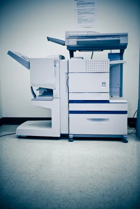
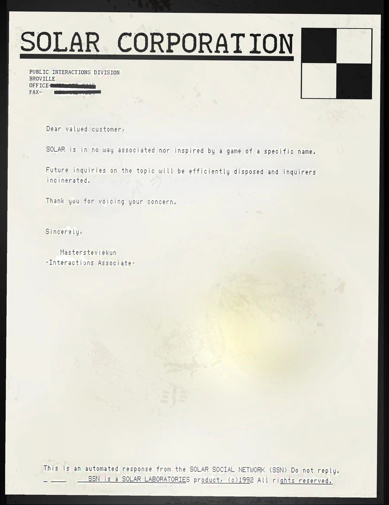

SOLAR Social Network
An internal messaging network using fax machines, described in community sources as a SOLAR communication service.
An internal mail network
The SOLAR Social Network, or SSN, was developed as an internal mail network for SOLAR Corporation. Dot-matrix fax printers were placed in busy company locations. As a pre-World Wide Web email service, it enjoyed some success because it required only paper and a telephone connection.
Each fax printer offered quick, single-button replies and a 5-inch floppy disk reader. Incoming messages nevertheless remained physical sheets, requiring recipients to search through piles of paper at the machine.



The move to SOLAROS NT
The arrival of the web, excessive paper consumption, and the lack of a junk-mail filter led to SOLAROS NT in 1992. Its paperless successor included several privacy features and an option to ignore messages from outside the network.
After the transition, the old fax printers were repurposed as copiers and network printers for the new operating system. An old letter sent by P.I. Division illustrates the earlier correspondence system.



See also
Sources and references
- v11.4.4 maps, signs, books and items World records
- SOLAR Social Network · Broville Wiki Community archive
Text adapted and expanded from SOLAR Social Network (contributors and history, revision 5045). Adapted text is available under CC BY-SA 3.0.